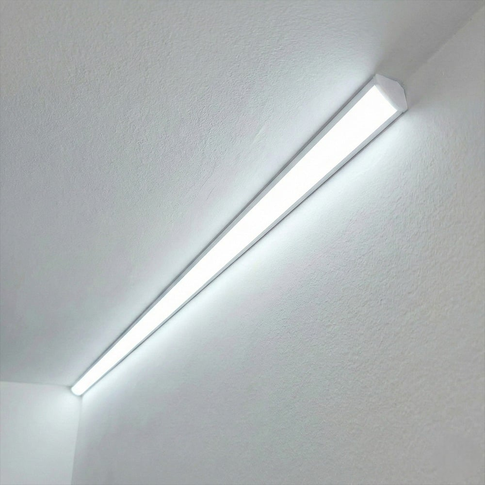
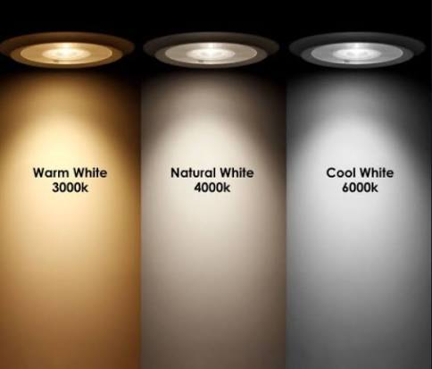
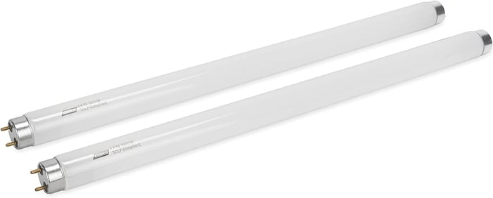

백색등 달라고 하면 높은 확률로 받을 수 있는 등의 색
백색이 아니라고 백색등을 달라고 따지면 혹시 주광색을 말하는거냐 되물어올텐데

이게 주광색임
이유는 조명 업계에선

이 셋이 그냥 전부 백색 취급임
업계에서 하는 말로는
과거 백열 전구도 백색으로 봤기에

더욱 밝아진 형광등을 형광색으로 구별했기 때문이라는데
솔직히 백열등만 쓰던 시대 살던 할머니 할아버지도 백열등을 노란불이라고 하는데 억지 아니냐 소리 나옴
ㄹㅇ 쨍하고 눈찌름